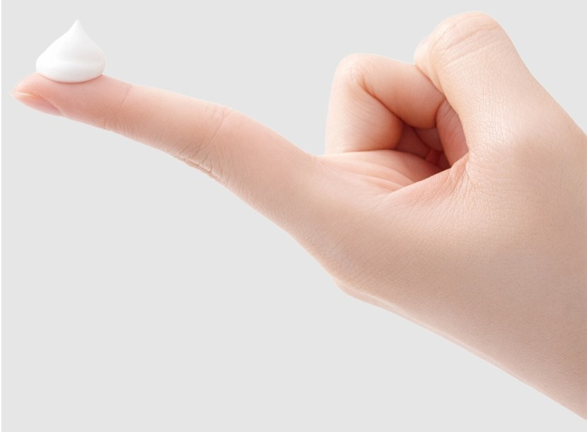
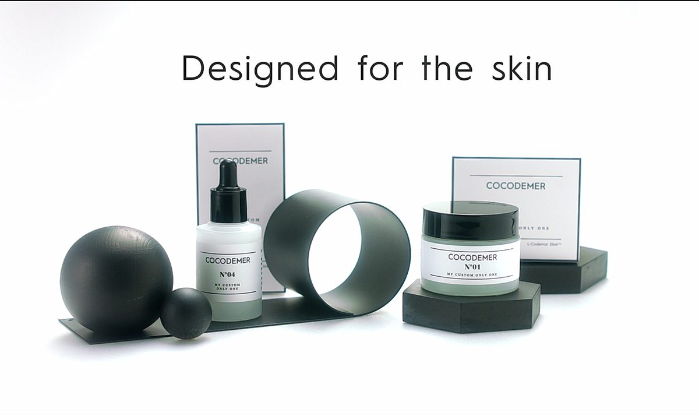
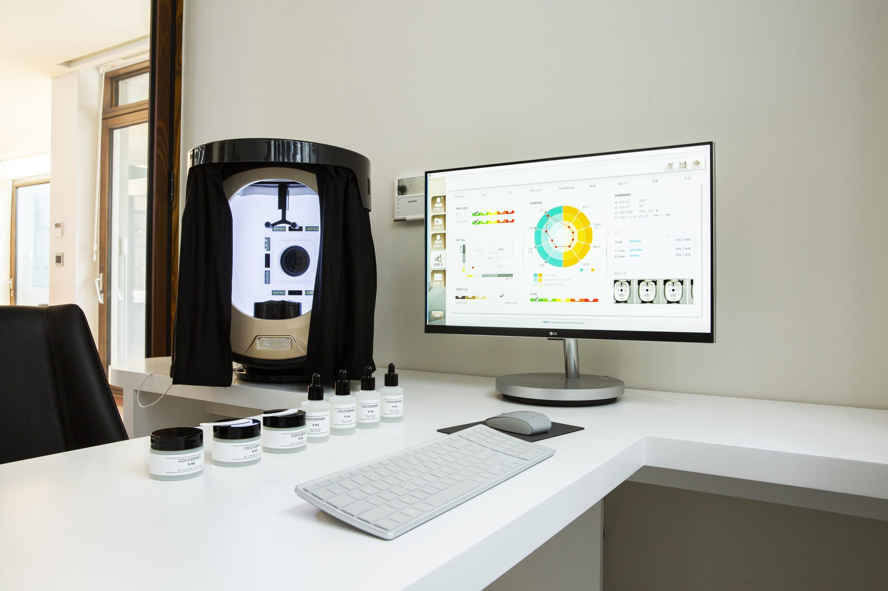
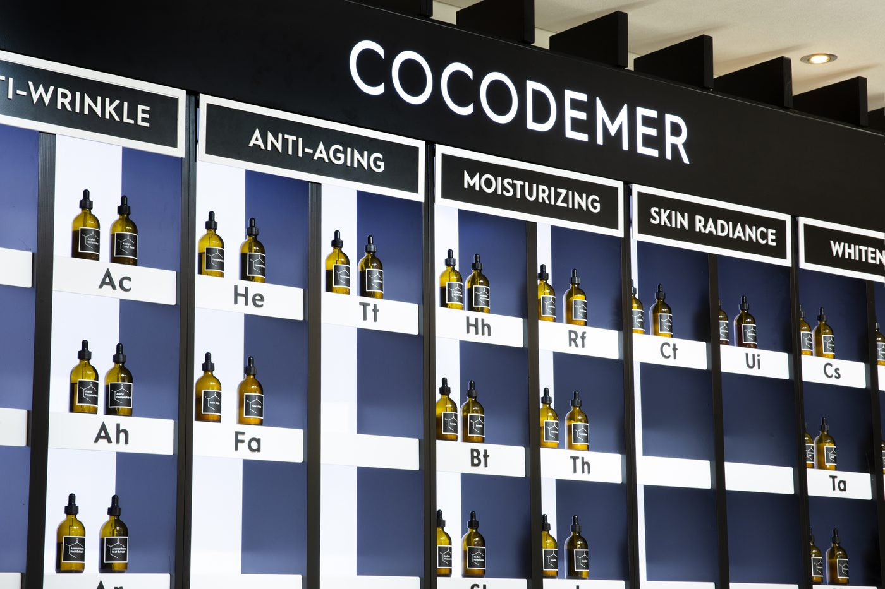
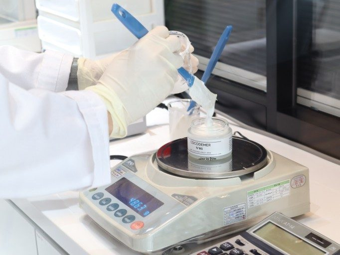
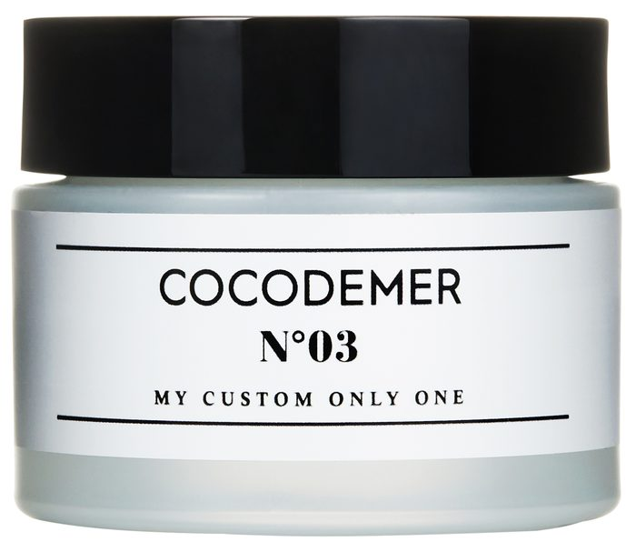

RESET · BOOST · KEEP
제품을 나열하지 않습니다.
피부가 달라지는 순서를 설계합니다.
정돈하고(Reset), 유효 성분을 올리고(Boost), 그 상태를 붙잡아 두는(Keep). 세 단계에 각각 전용 기술을 둔 스킨케어 시스템입니다.
Reset · Boost · Keep
제품을 나열하는 대신 순서를 설계했습니다. 피부를 정돈하고(Reset), 유효 성분을 올리고(Boost), 그 상태를 붙잡아 두는(Keep) 세 단계가 하나의 흐름으로 이어집니다.
노폐물과 각질을 정돈해 다음 단계가 고르게 작동할 바탕을 만듭니다.
- 마일드 클렌징 패드Mild Cleansing Pad출시 예정
- 필 리셋 세럼Peel Reset Serum출시 예정
정돈된 피부 위에 유효 성분을 깊숙이 전달하는 중심 단계입니다.
- 아쿠아 퀵버블 마스크Aqua Quick Bubble Mask판매중
- 래디언스 퀵버블 마스크Radiance Quick Bubble Mask출시 예정
올려 둔 컨디션을 가두고 오래 유지시켜 시스템을 완성합니다.
- 킵 크림Keep Cream출시 예정
라인별로 보기
코코드메르 공식 스마트스토어
제품 구매는 네이버 스마트스토어에서 진행됩니다. 홈페이지는 제품 정보를, 구매·결제·배송은 스토어가 담당합니다.
Connect Code of intrinsic Merit
코코드메르라는 이름에는 두 겹의 뜻이 있습니다. 하나는 세이셸의 코코 드 메르(Coco-de-Mer), 다른 하나는 본질적 가치를 잇는 코드(Connect Code of intrinsic Merit)입니다.
세이셸에서 출발한 원료
코코 드 메르는 세이셸 제도에만 자생하는 야자로, 세계에서 가장 큰 씨앗을 맺습니다. 원시 그대로의 환경에서 오랜 시간에 걸쳐 자라는 이 열매를 브랜드의 출발점으로 삼았습니다.
천연 아미노산이 풍부한 이 열매를 모방해, 식물 원료를 기반으로 한 독자 기술 L-CODEMAR ELIXIR™를 만들었습니다.
브랜드 스토리Air-in System™
현재 판매 중인 아쿠아 퀵버블 마스크에 적용된 제형 기술입니다. 액체 상태보다 표면적이 넓은 미세 버블 입자가 피부 접촉 면적을 넓혀, 유효 성분이 겉돌지 않고 흡수되도록 돕습니다.

피부 굴곡에 밀착하는 미세 버블
조밀한 미세 버블이 피부 굴곡 사이사이에 밀착해 수분과 유효 성분을 빠르고 균일하게 전달합니다. 씻어내는 과정 없이 그대로 흡수시키는 제형이라 루틴을 방해하지 않습니다.
Reset · Boost · Keep 세 단계에는 각각 전용 기술을 두었습니다. 개발 중인 단계별 기술은 적용 제품 출시 시점에 시험 데이터와 함께 공개합니다.
원료 · 기술 보기맞춤형 화장품 시기의 브랜드 영상
개인 맞춤 처방 서비스를 운영하던 시기에 제작한 영상입니다. 해당 서비스는 현재 운영하지 않으며, 브랜드의 기록으로 남겨 둡니다. · 1분 56초

미스지컬렉션 22SS 쇼
2022 S/S 컬렉션 쇼에 코코드메르가 함께했습니다. 런웨이 현장 기록입니다.


맞춤 조제에서 스킨 코드로
코코드메르는 오프라인 스튜디오에서 과학적 피부 진단(CSTI)으로 16가지 피부 타입을 구분하고, 활성 성분을 코드로 분류해 1:1 맞춤 조제 화장품을 만들었습니다. 현재 조제 서비스는 운영하지 않으며, 그 과정에서 축적한 진단 체계와 처방 로직은 스킨 코드 세럼 16종으로 이어졌습니다.




※ 오프라인 맞춤 조제 서비스는 종료되었습니다. 스킨 코드 세럼 16종을 포함한 당시 라인업은 현재 전 품목 품절이며, 처방 기록은 보관하고 있습니다.
코코드메르 브랜드를 취급하시려면
중동 · 유럽 · 중화권(중국 · 대만)을 중심으로 유통 파트너십을 운영하고 있습니다. 브랜드 제품을 취급하거나 함께 만드는 방식은 네 가지입니다.
완제품 수출 — 코코드메르 브랜드 제품을 그대로 공급합니다.
국가별 독점 유통권 — 특정 국가·지역의 브랜드 독점 유통권을 부여합니다.
프래그런스 라이선스 · 공동기획 — 향수 컬렉션을 별도 라인으로 전개하거나 현지 파트너와 공동 기획합니다.
OEM · ODM 수탁 — 바이어 브랜드로 제작합니다. 국내 생산 네트워크와 축적된 처방 자산을 활용합니다.